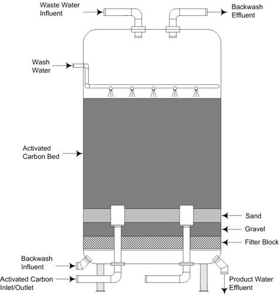

| Reactivation | ||
| After a few months or a few years, granular activated carbon will get to a point of exhaustion. When exhaustion of the activated carbon occurs, no more adsorbates can be adsorbed onto the surface of the carbon. At this point, there are two options. The first option is to dispose of the carbon and replace it with new virgin granular activated carbon. The other option is to have the exhausted activated carbon reactivated. Reactivation is the process of ridding the activated carbon of the adsorbed adsorbates. Reactivation can be done onsite, or one could send the spent carbon to a company offsite to have it reactivated. There are some economic issues that surround the question on “should I send my carbon offsite or invest in onsite equipment.” To answer the question, the frequency of virgin or reactivated carbon becoming exhausted would need to be addressed. If the design parameters dictate an exhaustion rate in the magnitude of years then it would not be economically sounds to invest in onsite equipment to reactivate the spent carbon. However, if the exhaustion rate is closer to only a few months and the activated carbon system is a large scale then investing in onsite reactivation equipment may be a wise decision. In water treatment plants, the general practice is to replace spent carbon with virgin carbon. The basis of this practice is because activated carbon used on the treatment of water has a relatively long shelf life due to the low contaminant concentration of the water. | ||
| There are three potential forms of reactivation: chemical, steam, and thermal. Thermal reactivation is commonly the regeneration process that is used in the treatment of water. Chemical and steam do not effectively removed organics adsorbates off the surface of the activated carbon particles; therefore these processes are generally not used in water treatment systems and will not be discussed in detail. | ||
| Thermal regeneration furnaces are used to create the elevated temperature environment for the spent carbon. There are different kinds of furnaces that are in use today. Customary used furnaces are the multihearth, the rotary kiln, the infrared, and the fluidized bed furnace. The multihearth furnace is the most commonly used furnace in already established treatment facilities. The fluidized bed furnace has more recently been incorporated in water treatment plants (Pontius, 1990) | ||
| The main concern with the regeneration process is the carbon loss as a result of the regeneration. The source of the loss is usually caused by a poorly designed transportation system to furnace, and the temperature at which the furnace is operated. Through the course of the regeneration process, there are a few changes in the activated carbon that should be noted. These changes are a function of the type of furnace used and the conditions at which the furnace are operated. Inflicted alterations consist of changes to the pore size distribution, surface area, diameter, and hardness. Furnaces that operate at optimal conditions can minimize changes and return the activated carbon very closely to its original state. | ||
| Using a furnace in the thermal regeneration process has its environmental concerns. The concerns stem from the organic compounds that are adsorbed. When spent carbon is put through the regeneration process there is a possibility that the gaseous or liquid discharge will be in a high concentration of organic material and these discharges would be released in environment. To prevent this environmental blunder, all furnaces are equipped with certain pollution control equipment. Scrubbers and afterburners are used to minimize the concentration of such organics in the discharge streams. Below is a typical exhaust system that is incorporated on each of the different kinds of furnaces used in the regeneration process. | ||
|  | ||
| Figure 5. Typical Exhaust System on Furance Housing | ||